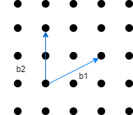

耐量子暗号(格子暗号)#
耐量子暗号#
近年、量子コンピュータの登場によりRSAや楕円曲線暗号などが危殆化すると言われており、量子計算に耐性のある暗号の研究・開発が進められている。量子計算に耐性のある暗号には量子暗号 と耐量子暗号がある。量子暗号は量子力学の原理を用いて構成された暗号で、耐量子暗号は量子コンピュータで解読することが難しい数学的な問題を暗号の根拠に使った暗号のこと全般を指す。耐量子暗号は量子技術を使わないアルゴリズムであるため古典コンピュータでも実装が出来る。
耐量子暗号の種類#
現在、NISTによる耐量子暗号の標準化プロジェクトが進行しており、2022年の夏に4つのアルゴリズムが標準化アルゴリズムとして選択された。現在Alternativesを選択するRound4が進行している状況だ。(2023年10月現在) NIST PQCの候補を見てもらえばわかる通り、耐量子暗号には様々な方式が存在する。代表的な手法には以下のようなものがある。
格子暗号(Lattice-based cryptography)
NTRU ,NTRUPrime ,CRYSTALS-KYBER ,SABERなど符号暗号(Code-based cryptography)
BIKE ,ClassicMcElieceなど多変数多項式暗号(Multivariate polynomial cryptography)
Rainbowなど同種写像暗号(Isogency-based cryptography)
SIKE
格子暗号#
格子暗号とは、暗号の安全性の根拠に格子を用いる暗号を指す。NISTで標準化が決定した4つのアルゴリズムのうち、3つは格子ベースであることからもわかるように、非常に注目されている暗号方式である。
格子とは#
自然数\(m,n\)に対してユークリッド空間\(\mathbb{R}^m\)上の\(n\)個の線形独立なベクトル\(\{\mathbf{b_1},\mathbf{b_2},...,\mathbf{b_n}\}\)の整数係数の線形結合全体の集合 $\( L = L(\{\mathbf{b_1},\mathbf{b_2},...,\mathbf{b_n}\}) = \left\{\sum_{i=1}^na_i\mathbf{b_i} : a_i\in \mathbb{Z}\right\} \)$
を格子と呼ぶ。
格子を生成する線形独立なベクトルの集合\(\{\mathbf{b_1},\mathbf{b_2},...,\mathbf{b_n}\}\)を格子の基底と呼び、\(\{\mathbf{b_1},\mathbf{b_2},...,\mathbf{b_n}\}\)を行ベクトルに持つ\(n\times m\)行列\(\mathbf{B}\)を基底行列と呼ぶ。以上を踏まえて格子\(L\)は\(L(B)\)と表す。
以下は二次元の場合の基底のイメージである．

格子問題#
格子暗号は上述の通り、計算困難な格子上の問題(格子問題)に安全性の根拠を置いている。ここでは、代表的な格子問題をいくつか紹介する。
最短ベクトル問題(SVP: Shortest Vector Problem)#
\(n\)次元整数格子\(L\subseteq \mathbb{Z}^m\)の基底\(\{\mathbf{b_1},\mathbf{b_2},...,\mathbf{b_n}\}\)が与えられたとき、格子上の最短非零ベクトル\(\mathbf{x}\in L\)を見つける問題。 つまり，格子内の任意の非零ベクトル\(\mathbf{y}\)に対して，\(||\mathbf{x}||\leq ||\mathbf{y}||\)となる\(\mathbf{x}\)を見つける問題。 問題自体は非常に単純で、2次元の場合などはぱっと見で解ける問題であるが、高次元になるととても難しい問題になる。現在までのところ高次元でこの問題を解く効率的なアルゴリズムは発見されておらず、暗号の安全性の根拠として使われることが多い。また、発見したベクトルを最短ベクトルと判定することも難しい問題となる。
最近ベクトル問題(CVP: Closest Vector Problem)#
\(n\)次元整数格子\(L\subseteq \mathbb{Z}^m\)の基底\(\{\mathbf{b_1},\mathbf{b_2},...,\mathbf{b_n}\}\)とターゲットベクトル\(\mathbf{t}\in\mathbb{Z}^m\)が与えられたとき、ターゲットベクトル\(\mathbf{t}\)に最も近い格子内の非零ベクトル\(\mathbf{x}\)を見つける問題。 つまり、任意の非零ベクトル\(\mathbf{y}\in L\)に対して\(||\mathbf{x}-\mathbf{t}||\leq ||\mathbf{y}-\mathbf{t}||\)となるベクトル\(\mathbf{x}\)を見つける問題である。
近似版SVP,CVP(approximate SVP,CVP)#
近似因子\(\gamma\geq 1\)に対して，\(n\)次元整数格子\(L\subseteq \mathbb{Z}^m\)の基底\(\{\mathbf{b_1},\mathbf{b_2},...,\mathbf{b_n}\}\)が与えられたとき
a-SVP
格子内の任意の非零ベクトル\(\mathbf{y}\)に対して、近似因子をかけた以下の条件式を満たす \(\mathbf{x}\)を見つける問題
a-CVP
ターゲットベクトル\(\mathbf{t}\)に対して $\(||\mathbf{x}-\mathbf{t}||\leq \gamma||\mathbf{y}-\mathbf{t}||\)\( を満たす格子ベクトル\)\mathbf{x}$を見つける問題．
これら近似版の格子問題はある程度の次元までは効率的に解くことのできるアルゴリズムが存在する．(格子簡約アルゴリズム，Babaiの最近平面アルゴリズムなど)
その他格子問題#
その他よく論文等で見かける格子問題として，SIS問題，BDD問題やその派生形などがある。これらの問題は上で紹介した格子問題に帰着できることが多い．
LWE暗号#
ここからは格子暗号の中でも代表的なLWE暗号を紹介する．LWE暗号はそれ自体が一つの暗号を指すわけではなく，LWE問題という格子問題に安全性の根拠を置いた暗号の総称である． NIST によって標準化アルゴリズムに選ばれたCRYSTALS-KYBERもLWEの派生問題に基づいた暗号であり，格子暗号の中ではメジャーな方式となっている。
LWE問題#
LWE問題は機械学習の理論から派生してできた計算困難な問題である．
\(n\in \mathbb{N}\), \(q>0\)(奇素数),平均0・標準偏差\(\sigma\)の離散ガウス分布を\(\chi\)とする。
有限体\(\mathbf{F_q}\)上の秘密ベクトル\(s\in \mathbb{F_q}\)を選び，一様ランダムに選択された\(a\in \mathbb{F_q^n}\)と離散ガウス分布\(\chi\)から選択された誤差\(\mathbf{e}\in \mathbb{Z}\)に対して
とする．また，この組を出力する確率分布を\(L_{s,\chi}\)とする。
LWE問題を実際に可視化すると以下のようになる。(n=3,q=13)
これを行列で表示すると，係数行列\(\mathbf{A}\)と秘密ベクトル\(\mathbf{s}\),誤差ベクトル\(\mathbf{e}\),行列\(\mathbf{b}\)を用いて
のように表すこともできる．
LWE問題には以下の二つの種類がある。
判定LWE問題(Decision-LWE)
\((a,b)\)の組が確率分布\(L_{s,\chi}\)からサンプリングされた元か，\(\mathbf{F^n_q}\times \mathbf{F_q}\)から一様ランダムにサンプリングされた元かを判定する問題。
探査LWE問題(Search-LWE)
\((a,b)\)の組から秘密ベクトル\(s\)を復元する問題。 要するに、探索LWE問題は誤差付きの連立一次方程式の解を求める問題となる。
NTRU暗号#
NTRU暗号は1996年にCRYPT’96で発表された暗号方式で，現在までNTRU-primeなど様々な派生形が考えられてきた。NISTで標準化が決定した4つのアルゴリズムに含まれるFALCONもその一部にNTRU格子を用いており，メジャーな格子暗号の一種であると言える。 NTRU暗号はSVPに安全性の根拠を帰着して考えられる。
次のページでは実際のNTRU暗号とRegev暗号(LWE暗号)を実装しながら紹介し、その攻撃手法も紹介する。